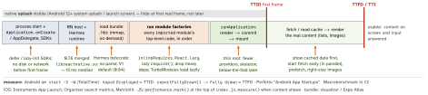

react-native · folio
In one line: A cold start runs native init → JS runtime → bundle load → module factories (the top-level code of every imported module) → first render/mount = TTID → real content = TTFD/TTI. Every optimisation is “do less before the first frame”: precompiled bytecode, lazy modules, a thin root, deferred SDKs. Measure it on a release build on a low-end Android.
Download PDF Print view LaTeX source


How it works
- Cold = new process (everything above); warm = process alive, activity recreated; hot = brought to front. Optimise and report cold.
- Hermes compiles JS to bytecode at build time (release builds only); bytecode is loaded on demand, no parse. Hermes V1 (opt-in 0.82, default 0.84): Expensify measured Android low-end -3.2% bundle load / -7.6% TTI, iOS -9% / -2.5%.
- Module factories: Metro wraps each module in a function;
importruns it at first require. A root that imports every screen runs them all at start. Inline requires move eachrequireto its first use, so unused paths never execute. RN CLI inlinesrequires by default; Expo: enableinlineRequiresinmetro.config.js. - RAM bundles (indexed/file bundles, parse on demand) — legacy, not supported with Hermes; Hermes’ on-demand bytecode replaces them.
- TurboModules initialise on first access (legacy modules all at start); a module touched in the root still costs at startup.
- Splash: iOS launch storyboard; Android 12+ always draws the system splash (
installSplashScreen(),setKeepOnScreenCondition); Expo:SplashScreen.preventAutoHideAsync()→hideAsync()when the first screen has laid out.
Example — lazy paths + marks
// index.js - first line executed
performance.mark('js-start');
// screens off the first path load on navigation
const Settings = lazy(() => import('./Settings'));
let Charts = null; // lazy require
const openCharts = () => {
Charts ??= require('./Charts').default; nav('charts'); };
function Home() {
const feed = useFeed(); // cache first, then network
useEffect(() => { if (feed.ready)
performance.measure('ttfd', 'js-start'); }, [feed.ready]);
} // PerformanceObserver ships 'measure' entries to analyticsWhere the time really goes
- Native: analytics/crash/ads SDKs in
onCreate/didFinishLaunching, synchronous storage reads, big DI graphs — defer until after first frame or init on a background thread. - JS: moment/lodash-size deps, i18n loading every locale, a store rehydrating megabytes before render, polyfills, JSON config parsing.
- First render: a navigator that builds every tab, providers that compute on mount, images decoded at full size.
Bundle analysis
npx react-native-bundle-visualizer@latest(--expofor Expo) — source-map-explorer over Metro’s output, treemap per package.- Expo Atlas:
EXPO_ATLAS=true npx expo export, thennpx expo-atlas .expo/atlas.jsonl. - source-map-explorer on a Hermes export needs
--no-bytecode.
Traps
- Timing a debug build: bundle streamed from Metro, no bytecode, dev checks — startup numbers mean nothing.
- Inline requires change evaluation order: modules with side effects (polyfills, global setup) break —
blockList/nonInlinedRequires. - A long splash makes TTID look great; users feel TTFD. Report both.
- “Use RAM bundles” on a Hermes app — not supported, and not needed.
- A lazy screen with module side effects (subscribing, globals) defeats laziness.
Remember
Less native init · bytecode · lazy modules · thin root · cached first paint — and measure TTID and TTFD on a release build.